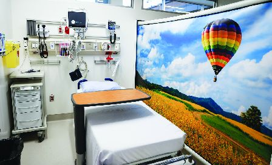

安省偏远乡镇家庭医生更见短缺。（加新社）
面对家庭医生不足，安省渡假胜地亨茨维尔（Huntsville）最近推出奖励计划，若医生前往当地开设诊所，可以获得8万元奖金，但他们最少要在社区内应诊5年。
医疗专家指出，这只会造成抢医生的混乱局面，安省医学会（OMA）倡议增加医生才是主要关键。
当家庭医生至少五5年 小镇提供8万元签约奖金
亨茨维尔市议会通过这项激励措施后表示，将为任何同意在该镇工作至少五5年的家庭医生提供8万元的签约奖金。
该镇的议员史东 (Bob Stone)是率先发起这项奖金计划的，并于今年5月获得议会批准，希望能吸引10名医生。
史东说，两个月后，已有7位医生表达了兴趣，其中几位即将签约。计划开始发挥作用，令人非常兴奋，一旦签正合约，将向外公布。
史东解释说，亨茨维尔面对必需马上采取行动的迫切性，几位在职医生即将退休，该镇2.1万人中会近三分一面临没有家庭医生的风险。
多家餐厅提供500元礼券 汽车经销商供应1年免费汽车
据乡镇议会批准的条款，任何接管现有诊所的医生均可获得6万元的奖金。开设新诊所的医生将获得8万元的奖励。这些资金来自政府预算。预先给医生奖金，因为这才能让他们来到镇上应诊，而奖金与5年应诊的承诺挂钩。
史东又说，在亨茨维尔，可用的不仅仅是奖金，多家餐厅为新来的医生提供500元的礼券，一家汽车经销商提供一年的免费汽车，一个地区的度假村则提供免费的高尔夫俱乐部会员资格。
史东称，由于亨茨维尔不想从邻近社区中抢走医生，因此来自密月湖（Muskoka）和周边城市的医生没有资格，但其他地方都可公平的竞逐。
1小镇提供免费住房和诊所
在多伦多以东约200公里的马莫拉湖（Marmora）镇，除其他奖励措施外，医生还可以以不用花费就获得河滨住房和诊所。
省内其他社区也在使用类似的策略。安省东部柯克兰湖（Kirkland Lake）的布兰奇河健康中心（Blanche River Health）向全球各地成功推荐医生或护士到该医院工作的任何人提供2千元奖励。
在多伦多西北1,700多公里处的德赖登 (Dryden) ，地区卫生中心长期实行的医生奖金计划目前包括3.75万元的搬迁费用帮助。加上单独的省级拨款，搬到德莱顿的医生四年承诺最多可获得155,000元。
资金短缺地区面对更大压力
医疗专家警告说，尽管考虑到安省社区面临严重的医生短缺问题，这些举措是可以理解的，但这可能会加剧竞争医务人员，给本来已资金短缺的地区政府带来更大压力。
为柯克兰湖提供服务的布兰奇河健康中心总裁兼首席执行官范斯莱克(Jorge VanSlyke) 表示，其社区转介计划导致对查询者不断增加，但范斯莱克指出，现在判断该计划是否有效还为时过早。
加拿大公共卫生协会（Canadian Public Health Association）行政主任卡尔伯特(Ian Culbert）表示，吸引医生的激励措施的作用越来越大，这使得那些被认为不太理想的社区陷入了「不可能的境地」。
虽然此类计划在一些农村和北部社区已经存在了数十年，但自从大流行以来，这状况的速度明显加快。
卡尔伯特说，从人健康公平而言，这是一股非常消极的力量，带来了一个不公平的竞争环境，而且是出于绝望感。
专家倡议减免学生债务 吸引医学生往农村工作
考虑到为居民提供医疗保健的责任，卡尔伯特并没有责怪社区提供奖金。但他认为，有更好的方法来解决农村医生短缺问题，包括与社区服务年限挂钩的学生债务减免，或透过医学院的短期计划向医学生介绍农村工作的好处。他亦表示，安省需要采取更多措施来解决人均健康经费带来的赤字。
对此安省医学会主席诺瓦克医生（Dr. Dominik Nowak）来说，他认为第首要工作是解决家庭医生的整体短缺问题。
他说，五分之一的安大略人没有家庭医生，很快这个数字可能会达到四分之一。这种短缺引发了连锁反应，导致严重疾病早期诊断的人越来越少，最终给医院带来了更大的压力。他说这对社区来说意味著更大的不利。
诺瓦克支持推出新措施，让医生看到更多的病人，包括使用行政人员来减轻文书工作负担，目前文书工作平均每周需要花上19小时。
他还支持基于团队的护理系统，在该系统中，护士、药剂师、物理治疗师和其他人员更加协作地为医生提供支援。诺瓦克呼吁，省府提供更多支持，增加医生数量。